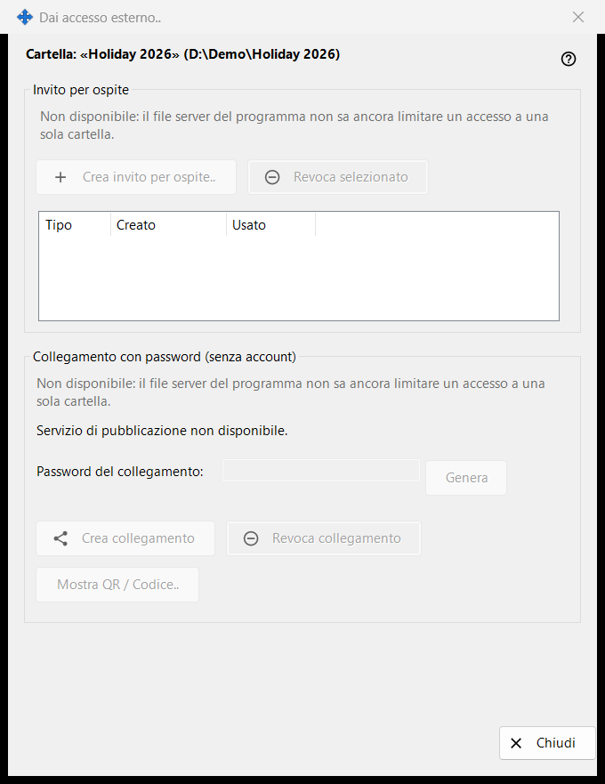
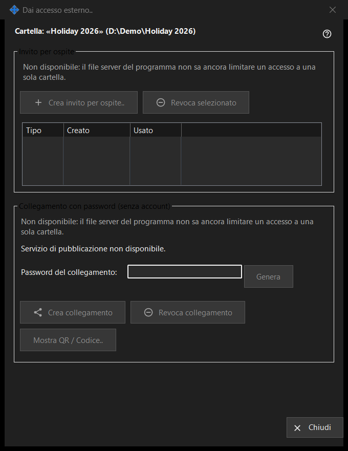

Dai accesso esterno
Scopo
Controlla l'accesso a una cartella condivisa per persone al di fuori dei tuoi dispositivi: un invito per ospite oppure un collegamento con password che non richiede un account. Si apre dal pulsante «Dai accesso esterno..» della finestra principale di Share Manager per la cartella selezionata. In questa versione i controlli che creano nuovi accessi sono disattivati e la finestra ne mostra il motivo, mentre gli accessi già esistenti possono ancora essere revocati.


In questo ordine
- Leggi la riga di intestazione con il nome e il percorso della cartella.
- In ogni gruppo leggi la riga con il motivo; finché è mostrata non si può creare nulla di nuovo.
- Per rimuovere un accesso, seleziona un invito e premi «Revoca selezionato», oppure premi «Revoca collegamento».
- Premi «Chiudi» (Esc) per uscire.
Gli elementi
Cartella e stato
La riga in grassetto indica la cartella e il suo percorso. La riga di stato in basso riporta l'ultimo risultato. Quando il servizio di pubblicazione non è in esecuzione, la finestra mostra «Servizio di pubblicazione non disponibile.» e i suoi pulsanti sono disattivati.
Invito per ospite
Il gruppo contiene «Crea invito per ospite..», «Revoca selezionato» e un elenco con Tipo, Creato e Usato per gli inviti per ospite di questa cartella. Revocare rimuove l'invito; la cartella e i suoi file non vengono eliminati.
Collegamento con password (senza account)
Lo stato riporta «Collegamento non creato.» oppure «Il collegamento è attivo.» La casella «Password del collegamento:» è mascherata e «Genera» la compila. «Crea collegamento» diventa «Aggiorna collegamento» mentre un collegamento è attivo. «Revoca collegamento» chiede prima, perché ogni sessione attiva sul collegamento termina. «Mostra QR / Codice..» mostra il collegamento come codice.
Perché la creazione è disattivata
Ogni gruppo mostra una riga con il motivo: il file server del programma non può limitare un accesso a una sola cartella. Finché è mostrata, tutti i controlli che creano inviti o collegamenti sono disattivati. La revoca degli accessi esistenti dipende solo da ciò che esiste.
Impostazioni del gestore · Impostazioni condivisione SFTP · Impostazioni server di scambio